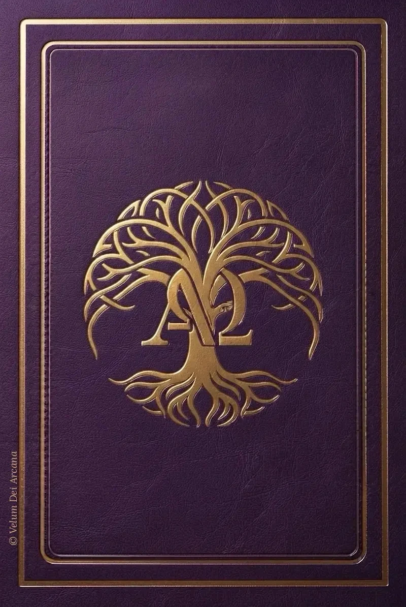

Velum Dei Arcana
Questo è un mazzo originale.
Ogni carta custodisce un significato come uno scrigno chiuso, non nasce per predire il futuro, ma per svelare, qualcosa che non si consuma nell'istante in cui la carta viene scoperta, ma che si apre poco a poco dentro chi la raccoglie, carta dopo carta, giorno dopo giorno, nella meditazione.
I significati custoditi in ogni carta sono profondi, e per questo ho scelto di limitarne l'accesso a una sola al giorno: perché i simboli e le parole abbiano il tempo di scendere in profondità, di sedimentare in chi li accoglie, prima di lasciare spazio a un nuovo messaggio.
Le figure che vedete sono nate da una canalizzazione, insieme al messaggio che le accompagna.
L'intento non è divinatorio, ma riflessivo: aprire il cuore di chi si accosta a queste carte al Grande Messaggero, lo Spirito, e di conseguenza a Dio.
Spero che ogni carta possa essere una piccola benedizione per il vostro cammino.
E se sentirete il desiderio di confidarmi cosa la carta e il suo messaggio vi hanno trasmesso, sarò onorata di accogliervi e di leggervi.

Tocca il dorso dorato per pescare una carta
Se desideri condividere con me cosa questa carta ti ha dato, cosa hai percepito e cosa ha mosso in te, scrivimelo qui.
Il messaggio si aprirà nella tua app di posta, pronto per essere inviato.